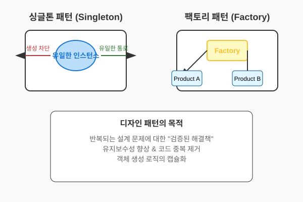

9주차: 디자인 패턴 (1) - 싱글톤과 팩토리 패턴 🏗️
우리는 이제 클래스를 설계하는 법을 배웠습니다. 하지만 실무에서는 단순히 클래스를 만드는 것을 넘어, “어떻게 하면 더 효율적이고 확장 가능하게 설계할 것인가”가 중요합니다. 이를 위해 전 세계 개발자들이 공통적으로 겪는 문제들에 대한 해결책을 정리해둔 것이 바로 디자인 패턴(Design Patterns)입니다.
이번 시간에는 가장 기본이 되는 생성 패턴인 싱글톤과 팩토리 패턴을 배웁니다.
1. 싱글톤 패턴 (Singleton Pattern)
싱글톤 패턴은 클래스의 인스턴스가 오직 하나만 생성되도록 보장하는 패턴입니다.

1.1 왜 사용하나요?
프로그램 전체에서 단 하나만 존재해야 하는 객체가 있습니다.
- 설정 관리자 (Configuration Manager): 설정 파일을 한 번만 읽어 모든 곳에서 공유해야 할 때.
- 데이터베이스 연결 풀 (DB Connection Pool): DB 연결은 비용이 많이 들므로 하나만 만들어 공유할 때.
- 로그 기록기 (Logger): 여러 곳에서 로그를 남기지만, 파일 쓰기는 한 곳에서 관리해야 할 때.
1.2 파이썬에서의 구현 (더 파이썬다운 방식)
파이썬에서는 __new__ 메서드를 오버라이딩하여 구현하거나, 모듈 시스템 자체를 이용합니다.
class Database:
_instance = None # 유일한 인스턴스를 저장할 변수
def __new__(cls, *args, **kwargs):
if not cls._instance:
print("새로운 인스턴스를 생성합니다.")
cls._instance = super().__new__(cls)
return cls._instance
# 테스트
db1 = Database() # 새로운 인스턴스 생성
db2 = Database() # 기존 인스턴스 반환
print(db1 is db2) # 결과: True (두 변수가 정확히 같은 객체를 가리킴)
2. 팩토리 패턴 (Factory Pattern)
팩토리 패턴은 객체 생성 로직을 별도의 클래스(팩토리)에 위임하여, 사용하는 쪽에서 구체적인 클래스 이름을 몰라도 객체를 생성할 수 있게 하는 패턴입니다.
2.1 왜 사용하나요?
만약 Dog, Cat, Bird 클래스가 있고, 상황에 따라 다른 동물을 생성해야 한다면, 사용하는 쪽에서 매번 if-else 문으로 어떤 클래스를 생성할지 결정해야 합니다. 팩토리 패턴을 쓰면 이 복잡한 로직을 팩토리 클래스 안에 숨길 수 있습니다.
2.2 구현 예시
class Dog:
def speak(self): return "멍멍!"
class Cat:
def speak(self): return "야옹!"
class AnimalFactory:
@staticmethod
def create_animal(animal_type):
if animal_type == "dog":
return Dog()
elif animal_type == "cat":
return Cat()
else:
raise ValueError("알 수 없는 동물 타입입니다.")
# 사용하는 쪽에서는 팩토리만 호출하면 됨
my_pet = AnimalFactory.create_animal("dog")
print(my_pet.speak()) # 결과: 멍멍!
3. 🔍 Deep Dive: 생성 패턴의 핵심 - 캡슐화
싱글톤과 팩토리 패턴의 공통점은 “객체 생성 과정의 캡슐화”입니다.
- 싱글톤: “인스턴스가 이미 있는지 확인하고 생성하는 과정”을 캡슐화.
- 팩토리: “어떤 구체 클래스를 생성할지 결정하는 로직”을 캡슐화.
이렇게 생성 로직을 분리하면, 나중에 Dog 클래스의 이름이 Puppy로 바뀌거나 새로운 동물 Bird가 추가되어도, 사용하는 쪽의 코드는 수정할 필요 없이 팩토리 클래스만 수정하면 됩니다. 이것이 바로 유지보수성이 높은 코드의 특징입니다.
✍️ 이번 주 연습 문제
문제 1. ConfigManager 클래스를 싱글톤 패턴으로 구현해 보세요. (설정값 theme와 language를 저장하고 관리하는 기능 포함)
문제 2. ShapeFactory 클래스를 만들어 보세요.
- 생성 가능한 도형:
Circle,Square,Triangle - 각 도형 클래스는
draw()메서드를 가지고 있어야 하며, 팩토리를 통해 생성된 도형의draw()를 호출하는 코드를 작성하세요.
문제 3. (심화) 파이썬의 모듈 시스템(파일 하나가 하나의 싱글톤처럼 작동하는 특성)을 이용하여 싱글톤 패턴을 구현하는 방법과, 위에서 배운 __new__ 방식의 차이점을 설명해 보세요.
🔍 Deep Dive: 싱글톤(Singleton) 패턴의 3가지 파이썬 구현 방식 비교
싱글톤 패턴은 메모리에 단 하나의 객체 인스턴스만 보장하는 패턴입니다. 파이썬에서는 크게 세 가지로 구현할 수 있습니다.
- 클래스 데코레이터 방식: 외부에서 인스턴스화를 지시할 때 데코레이터 함수 내부의 인스턴스 저장소 딕셔너리를 거치게 해 기존 객체를 반환합니다.
__new__오버라이딩: 객체 할당(Allocation)을 결정하는__new__클래스 메서드에 인스턴스 캐시 플래그를 두어 중복 할당을 물리적으로 막습니다.- 모듈 임포트 방식: 파이썬은 이미 한 번 임포트된 모듈의 바이트코드를
sys.modules에 캐싱해 둡니다. 따라서 모듈 내부에 하나의 인스턴스를 선언하고 이를 가져다 쓰면, 인터프리터 자체 캐싱 기능을 이용한 가장 안전한 싱글톤이 구축됩니다.
☕ Java vs Python 스나이퍼 비교
싱글톤 구현과 멀티스레드 안전성
- Java: 여러 스레드가 동시에 최초 인스턴스 생성을 요청할 때 발생할 수 있는 데이터 손상(Race Condition)을 막기 위해,
volatile키워드와synchronized키워드를 활용한 Double-Checked Locking 패턴이나, 안전한 Static 빌더 클래스(Holder) 구조를 차용해야 합니다. - Python: CPython 엔진 특성상 글로벌 인터프리터 락(GIL)의 영향으로 바이트코드 단위의 동시 스레드 메모리 공유 경합이 다소 정리되며, 앞서 언급한 모듈 캐싱(
import) 기법을 이용하면 멀티스레드 경합 스트레스 없이 매우 간단하고 직관적으로 싱글톤을 공유할 수 있습니다.
🎧 Vibe Coding
🗣️ 학생 프롬프트 (AI에게 이렇게 명령해 보세요): “파이썬으로 설정 정보(DB 호스트, 포트 등)를 읽고 저장하는
ConfigurationManager클래스를 싱글톤 패턴으로 구현해 줘. 프로그램 내 어느 곳에서 클래스를 호출하든 항상 동일한 메모리 주소를 가진 단 하나의 설정 객체만 돌아가야 해.”
코딩 영단어 학습 📝
Design Pattern: 디자인 패턴. (소프트웨어 설계 중 자주 반복되어 나타나는 문제들을 해결하기 위해 정형화하여 정리한 재사용 가능한 설계 도면입니다.)Singleton: 싱글톤. (시스템 전체에서 인스턴스를 단 하나만 갖도록 보장하고, 어디서든 이 인스턴스에 고유 접근할 수 있게 강제하는 클래스 설계 패턴입니다.)Factory Pattern: 팩토리 패턴. (객체 인스턴스를 클래스에서 직접 뉴(new)하지 않고, 공장 역할을 수행하는 전용 클래스나 메서드를 통해 대신 주문 제작해 오는 디자인 패턴입니다.)